Model Residuals Audit
Alicja Gosiewska
2018-07-23
model_residuals_audit.RmdThis vignette demonstrates how to use the auditor package for auditing model residuals. auditor provides methods for model verification and validation by error analysis.
Many models, such as random forests and neutral networks are nowadays treated as black boxes. Therefore, there is a lack of theory that describes the behavior of errors in those models.
Most methods provided in auditor package are model-agnostic, so can be used regardless of knowledge about errors.
Some of the graphical error analysis methods also have corresponding SCORES, which allow comparison of two models.
Regression use case - apartments data
To illustrate applications of auditor to regression problems we will use an artificial dataset apartments available in the DALEX package. Our goal is to predict the price per square meter of an apartment based on selected features such as construction year, surface, floor, number of rooms, district. It should be noted that four of these variables are continuous while the fifth one is a categorical one. Prices are given in Euro.
library(DALEX)
data("apartments")
head(apartments)## m2.price construction.year surface floor no.rooms district
## 1 5897 1953 25 3 1 Srodmiescie
## 2 1818 1992 143 9 5 Bielany
## 3 3643 1937 56 1 2 Praga
## 4 3517 1995 93 7 3 Ochota
## 5 3013 1992 144 6 5 Mokotow
## 6 5795 1926 61 6 2 SrodmiescieModels
Preparation for error analysis
The beginning of each analysis is creation of a modelAudit object. It’s an object that can be used to audit a model.
Audit of residuals
In this section we give short overview of a visual validation of model errors and show the propositions for the validation scores. Auditor helps to find answers for questions that may be crucial for further analyses.
Does the model fit data? Is it not missing the information?
Which model has better performance?
How similar models are?
In further sections we will overview auditor functions for analysis of model residuals. They are discussed in alphabetical order.
Audit pipelines
The auditor provides 2 pipelines of model audit.
model %>% audit() %>% modelResiduals() %>% plot(type=…) This pipeline is recommended. Function
modelResiduals()creates amodelResidualsobject. Such object may be passed to aplot()function with defined type of plot. This approach requires one additional function within the pipeline. However once createdmodelResidualscontains all nessesary calculations that all plots require. Therefore, generating multiple plots is fast.
Alternative: model %>% audit() %>% modelResiduals() %>% plotType()model %>% audit() %>% plot(type=…) This pipeline is shorter than previous one. Calculations are carried out every time a function is called. However, it is faster to use.
Alternative model %>% audit() %>% plotType()
Help of functions plot[Type]() contains additional information about plots.
modelResiduals()
In this vignette we will use first pipeline. However alternative evaluations will be showed as comments. First, we need to create a modelResiduals objects.
lm_mr <- modelResiduals(lm_audit)
rf_mr <- modelResiduals(rf_audit)
head(lm_mr)## label res val variable y fitted.values std.res index
## 1 lm -176.0094 1 NA 4644 4820.009 -0.6218021 1001
## 2 lm -210.6776 2 NA 3082 3292.678 -0.7442769 1002
## 3 lm -219.9097 3 NA 2498 2717.910 -0.7768920 1003
## 4 lm -187.7511 4 NA 2735 2922.751 -0.6632827 1004
## 5 lm -193.0858 5 NA 2781 2974.086 -0.6821291 1005
## 6 lm 408.9568 6 NA 2936 2527.043 1.4447532 1006Some plots may require specified variable or fitted values for modelResidual object.
lm_mr_district <- modelResiduals(lm_audit, variable = "district")
rf_mr_district <- modelResiduals(rf_audit, variable = "district")
lm_mr_fitted <- modelResiduals(lm_audit, variable = "Fitted values")
rf_mr_fitted <- modelResiduals(rf_audit, variable = "Fitted values")
head(lm_mr_district)## label res val variable y fitted.values std.res index
## 1 lm -193.0858 Bemowo district 2781 2974.086 -0.6821291 1005
## 2 lm 408.9568 Bemowo district 2936 2527.043 1.4447532 1006
## 3 lm -190.4866 Bemowo district 3010 3200.487 -0.6729468 1007
## 4 lm -187.2122 Bemowo district 2593 2780.212 -0.6613788 1009
## 5 lm -197.6170 Bemowo district 2792 2989.617 -0.6981369 1016
## 6 lm -205.4415 Bemowo district 2550 2755.441 -0.7257788 1024Plots
plotACF() - Autocorrelation Function of Residuals
Autocorrelation Function plot can be used to check randomness of errors. If random, autocorrelations should be near zero for lag separations. If non-random, then autocorrelations will be significantly non-zero.
Residuals may be ordered by values any model variable or by fitted values. If variable is not specified, order from the data set is taken.
lm_mr_surface <- modelResiduals(lm_audit, variable = "surface")
plot(lm_mr_surface, type = "ACF")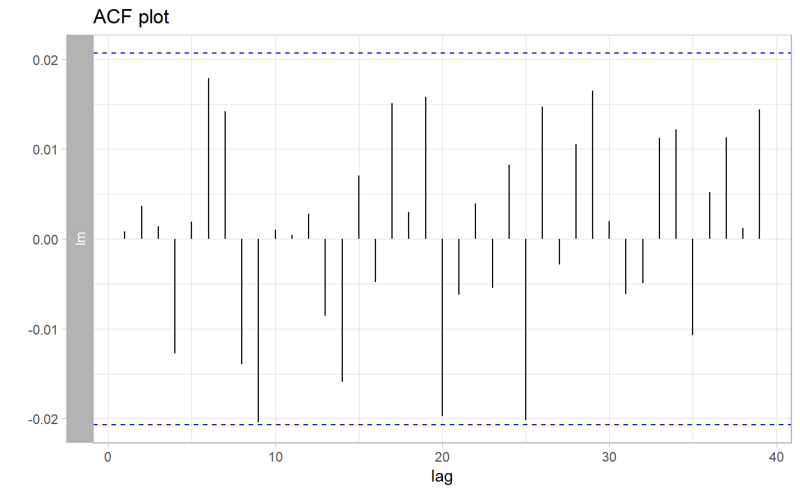
# alternative:
# plotACF(lm_audit, variable = "surface")plotAutocorrelation() - Autocorrelation of Residuals
On the Autocorrelation plot there are i-th vs i+1-th residuals. This plot may be useful for checking autocorrelation of residuals.
Sometimes it is difficult to compare two models basing only on visualizations. Therefore, we have proposed some scores, which may be useful for choosing a better model.
plot(rf_mr_fitted, type = "Autocorrelation")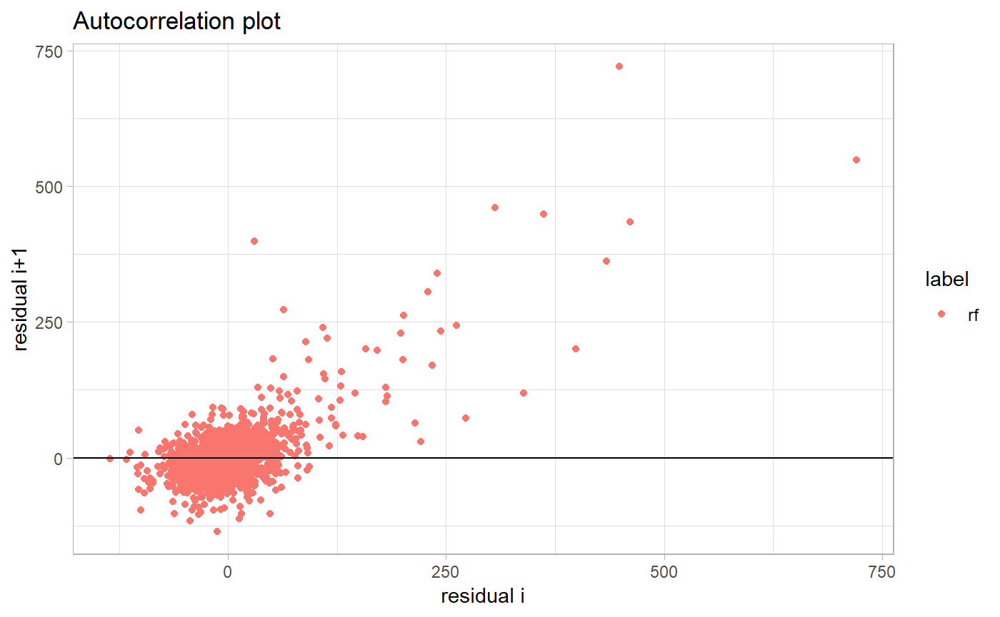
# alternative:
# plotAutocorrelation(rf_audit, variable = "Fitted values")DW score and Runs score are based on Durbin-Watson and Runs test statistics. Details and interpretation of scores are described in scoreDW() and scoreRuns() functions.
Scores can be calculated with the scoreDW() and scoreRuns() functions or the score() function with argument score equals to “DW” or “Runs”.
rf_score_DW <- scoreDW(rf_audit, variable = "Fitted values")
rf_score_Runs <- scoreRuns(rf_audit, variable = "Fitted values")
rf_score_DW$score## [1] 0.7958427rf_score_Runs$score## [1] -40.71628plotModelCorrelation - Correlation of Models
A grid of plots presents correlation of dependennt variable and fitted model values.
plot(rf_mr, lm_mr, type = "ModelCorrelation")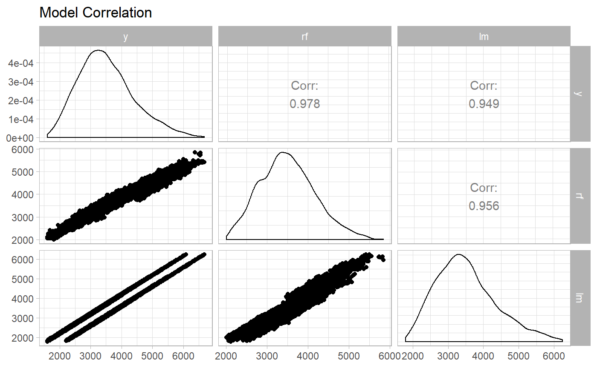
# alternative:
# plotModelCorrelation(rf_audit, lm_audit)plotModelPCA() - Model PCA
Principal Component Analysis of models residuals. PCA can be used to assess the similarity of the models.
plot(rf_mr, lm_mr, type = "ModelPCA")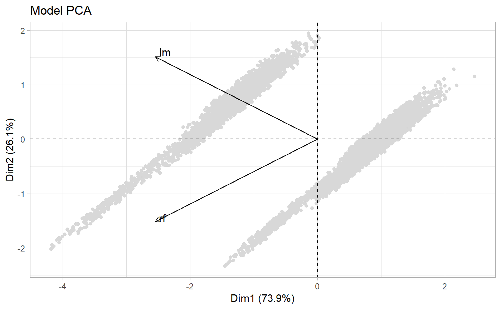
# alternative:
# plotModelPCA(rf_audit, lm_audit)plotPredition() - Observed vs Predicted
Basic plot of residuals vs observed, fitted or variable values. Without specified variable observations are in the order from the data set.
Black line corresponds to the y=x function.
lm_mr_m2 <- modelResiduals(lm_audit, variable = "m2.price")
rf_mr_m2 <- modelResiduals(rf_audit, variable = "m2.price")
plot(rf_mr_m2, lm_mr_m2, type = "Prediction")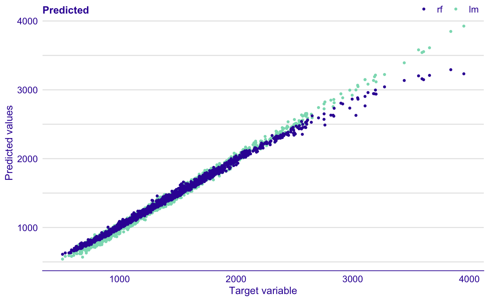
# alternative:
# plotPrediction(rf_audit, lm_audit, variable = "m2.price")Residuals may be ordered by values any model variable or by fitted values. And both models may be plotted together.
plot(rf_mr_fitted, lm_mr_fitted, type = "Residual")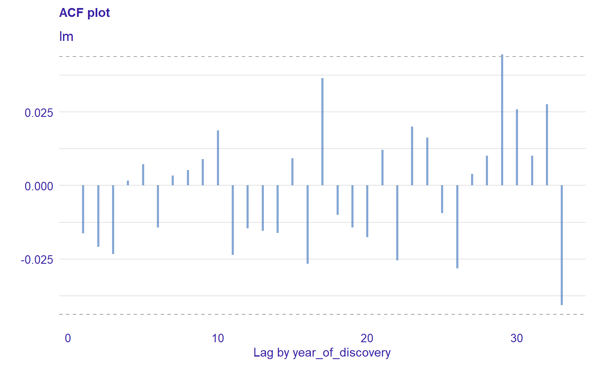
# alternative:
# plotResidual(rf_audit, lm_audit, variable = "Fitted values")plotREC() - Regression Error Characteristic (REC) Curve
Error Characteristic curves are a generalization of ROC curves. On the x axis of the plot there is an error tolerance and on the y axis there is a percentage of observations predicted within the given tolerance. REC curve estimates the Cumulative Distribution Function (CDF) of the error. Area Over the REC Curve (REC) is a biased estimate of the expected error.
plot(rf_mr, lm_mr, type = "REC")
# alternative:
# plotREC(rf_audit, lm_audit)plotResidual() - Plot Residuals vs Observed, Fitted or Variable Values
Basic plot of residuals vs observed, fitted or variable values. It provides information about the structure of the model.
Without specified variable observations are in the order from the data set.
plot(rf_mr, type = "Residual")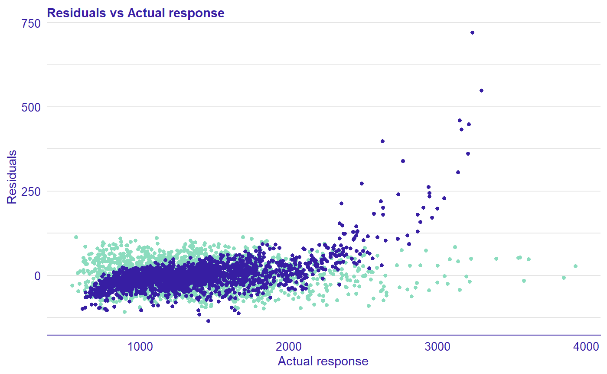
# alternative:
# plotResidual(rf_audit)Residuals may be ordered by values any model variable or by fitted values. And both models may be plotted together.
plot(rf_mr_fitted, lm_mr_fitted, type = "Residual")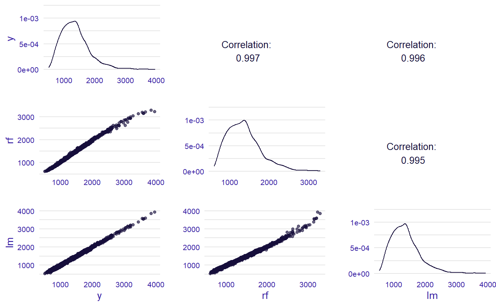
# alternative:
# plotResidual(rf_audit, lm_audit, variable = "Fitted values")plotResidualBoxplot() - Boxplot of residuals
Comparison of the absolute valued of residuals. The red dot stands for the root mean square.
plot(lm_mr, rf_mr, type = "ResidualBoxplot")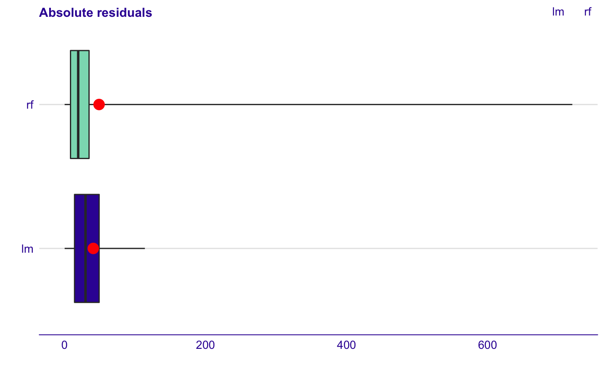
# alternative
# plotResidualBoxplot(lm_audit, rf_audit)plotResidualDensity() - Density of Residuals
Density of residuals may be plotted in different ways. Residuals of models may be simply compared.
plot(rf_mr, lm_mr, type = "ResidualDensity")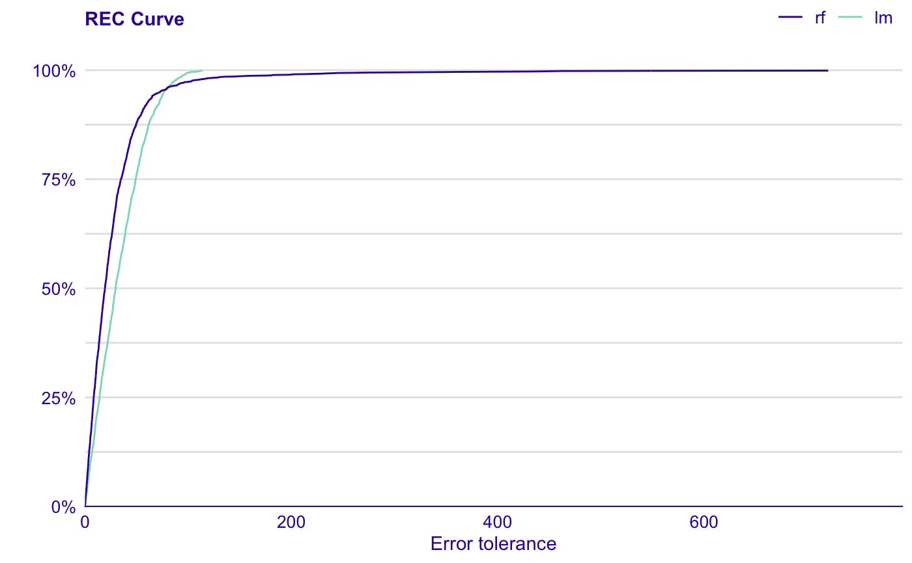
# alternative
# plotResidualDensity(rf_audit, lm_audit)Resuduals may be also divided by median of the numeric variable and splitted by a factor variable
plotResidualDensity(lm_mr_m2, rf_mr_m2)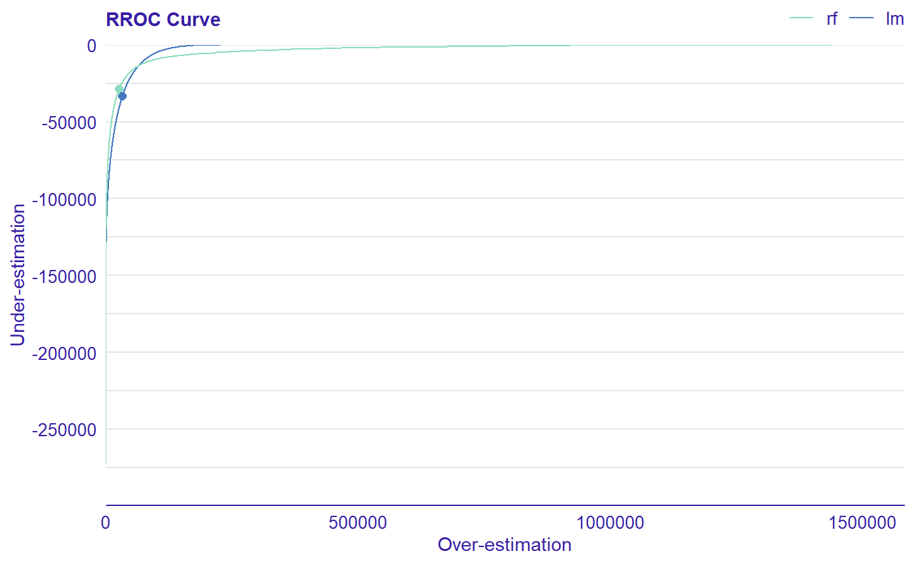
# alternative
# plotResidualDensity(rf_audit, lm_audit, variable = "m2.price")plotResidualDensity(lm_mr_district, rf_mr_district)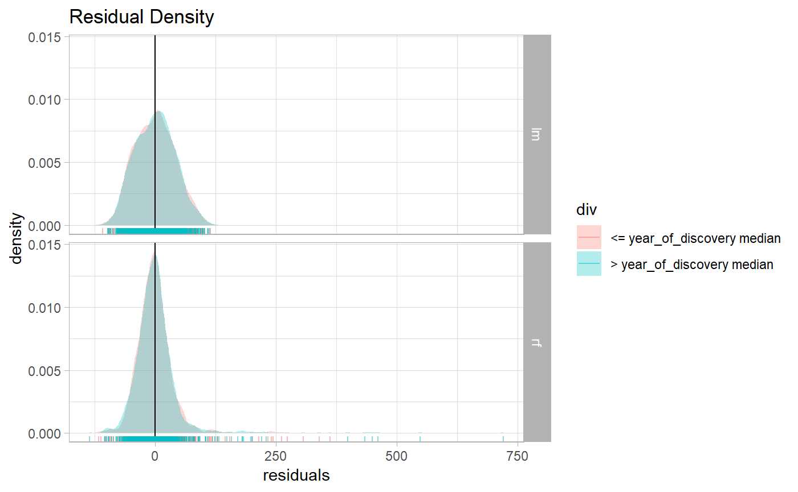
# alternative
# plotResidualDensity(rf_audit, lm_audit, variable = "district")plotRROC() - Regression Receiver Operating Characteristic (RROC)
The basic idea of the ROC curves for regression is to show model asymmetry. The RROC is a plot where on the x-axis we depict total over-estimation and on the y-axis total under-estimation.
For RROC curves we use a shift, which is an equvalent to the threshold for ROC curves. For each observation we calculate new prediction: where s is the shift. Therefore, there are different error values for each shift:
Over-estimation is caluclates as: . Under-estimation is calculated as: . The shift equals 0 is represented by a dot.
The Area Over the RROC Curve (AOC) equals to the variance of the errors multiplied by .
plot(rf_mr, lm_mr, type = "RROC")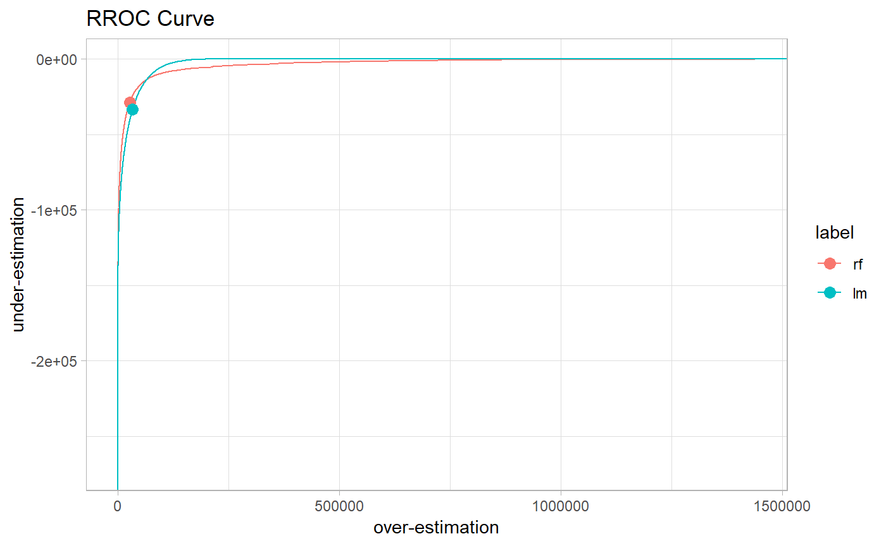
# alternative:
# plotRROC(rf_audit, lm_audit)plotScaleLocation() - Scale Location Plot
This plot shows if residuals are spread equally along the ranges of predictors.
plot(rf_mr_fitted, lm_mr_fitted, type = "ScaleLocation")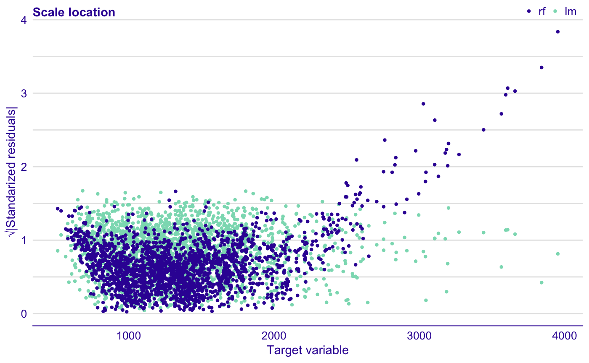
# alternative:
# plotScaleLocation(rf_audit, lm_audit, variable = "Fitted values")For comparing 2 models we can use GQ score, which is based on Goldfeld-Quandt test statistic. This score is computed and described in scoreGQ() function. And may be computed also in score() function with argument score equals “GQ”.